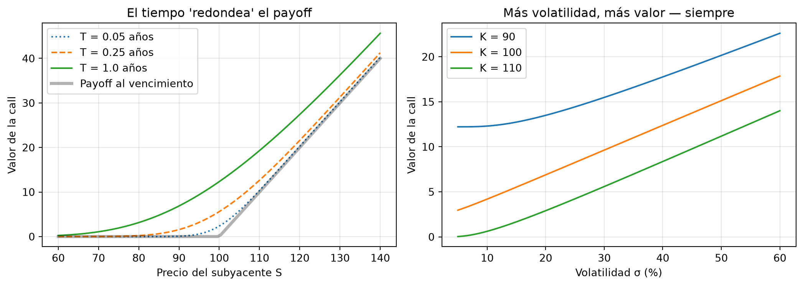
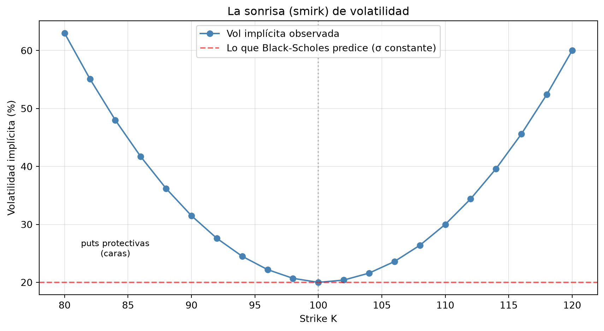
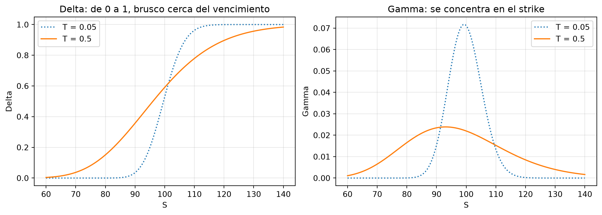

import numpy as np
import matplotlib.pyplot as plt
from scipy.stats import norm23 Capítulo 18: Valuación de Opciones y Volatilidad Implícita
Black-Scholes, Newton-Raphson, la sonrisa y las griegas
Resumen
Las opciones son el laboratorio perfecto de las finanzas cuantitativas: juntan probabilidad, métodos numéricos y estructura de mercado en un solo instrumento. Implementamos la fórmula de Black-Scholes, invertimos el problema para extraer la volatilidad implícita con Newton-Raphson, descubrimos la sonrisa de volatilidad —la evidencia de que el mercado no le cree a Black-Scholes— y calculamos las griegas, los tableros de sensibilidad que gobiernan la gestión de un book de opciones.
24 Introducción
Una opción de compra (call) da el derecho —no la obligación— de comprar un activo a un precio pactado \(K\) (el strike) en una fecha futura \(T\). Una put, el derecho de vender. La pregunta que define al capítulo: ¿cuánto vale hoy ese derecho?
La respuesta tiene una historia célebre. En 1973, Fischer Black, Myron Scholes y Robert Merton demostraron que —bajo ciertos supuestos— el precio de una opción no depende de la expectativa de nadie sobre si el activo va a subir o bajar. Depende de algo más sutil: de que la opción se puede replicar comprando y vendiendo dinámicamente el activo subyacente. Y si dos cosas tienen los mismos flujos, deben valer lo mismo (no-arbitraje). De esa lógica sale una fórmula cerrada, la más famosa de las finanzas.
En este capítulo la implementamos, y enseguida la damos vuelta: en el mercado real, la fórmula no se usa para calcular precios (los precios se observan en pantalla) sino para traducirlos a un lenguaje común: la volatilidad implícita.
25 La fórmula de Black-Scholes
Para una call europea sobre un activo que sigue un GBM (Capítulo 13) con volatilidad \(\sigma\), con tasa libre de riesgo \(r\):
\[C = S_0\, N(d_1) - K e^{-rT} N(d_2)\]
\[d_1 = \frac{\ln(S_0/K) + (r + \sigma^2/2)\,T}{\sigma\sqrt{T}}, \qquad d_2 = d_1 - \sigma\sqrt{T}\]
donde \(N(\cdot)\) es la función de distribución normal estándar. La fórmula tiene una lectura económica directa que ayuda a memorizarla: es lo que recibís menos lo que pagás, ponderado por probabilidades (en el mundo neutral al riesgo): \(N(d_2)\) es la probabilidad de ejercer, \(K e^{-rT} N(d_2)\) el valor presente esperado de lo que pagás si ejercés, y \(S_0 N(d_1)\) el valor esperado de lo que recibís.
def bs_call(S, K, T, r, sigma):
"""Precio Black-Scholes de una call europea."""
d1 = (np.log(S / K) + (r + 0.5 * sigma**2) * T) / (sigma * np.sqrt(T))
d2 = d1 - sigma * np.sqrt(T)
return S * norm.cdf(d1) - K * np.exp(-r * T) * norm.cdf(d2)
def bs_put(S, K, T, r, sigma):
"""Precio Black-Scholes de una put europea."""
d1 = (np.log(S / K) + (r + 0.5 * sigma**2) * T) / (sigma * np.sqrt(T))
d2 = d1 - sigma * np.sqrt(T)
return K * np.exp(-r * T) * norm.cdf(-d2) - S * norm.cdf(-d1)
# Un contrato concreto: call al dinero, 6 meses, vol 25%
S, K, T, r, sigma = 100, 100, 0.5, 0.05, 0.25
precio_call = bs_call(S, K, T, r, sigma)
precio_put = bs_put(S, K, T, r, sigma)
print(f"Call: ${precio_call:.4f}")
print(f"Put: ${precio_put:.4f}")
print(f"\nVerificación de paridad put-call:")
print(f" C - P = {precio_call - precio_put:.4f}")
print(f" S - K·e^(-rT) = {S - K * np.exp(-r * T):.4f}")Call: $8.2600
Put: $5.7910
Verificación de paridad put-call:
C - P = 2.4690
S - K·e^(-rT) = 2.4690La paridad put-call (\(C - P = S - Ke^{-rT}\)) que verificamos al final no depende de Black-Scholes ni de ningún modelo: sale de puro no-arbitraje. Por eso es el primer chequeo de cordura de cualquier implementación — si tu código la viola, está mal.
NotaLos supuestos que después importarán
Black-Scholes supone: volatilidad \(\sigma\) constante y conocida, trayectorias continuas (sin saltos — ya sabemos por el Capítulo 14 que es falso), tasa constante, sin costos de transacción y posibilidad de operar continuamente. Cada supuesto se viola en la realidad, y la genialidad práctica del mercado fue inventar una forma de medir esas violaciones: la sonrisa de volatilidad que veremos enseguida.
25.1 ¿Qué mueve el precio de una opción?
Antes de invertir la fórmula, desarrollemos intuición sobre cómo responde el precio a sus inputs:
S_grid = np.linspace(60, 140, 100)
fig, axes = plt.subplots(1, 2, figsize=(11, 4))
# Panel 1: valor de la call vs precio del subyacente, a distintos plazos
ax = axes[0]
for T_i, estilo in [(0.05, ":"), (0.25, "--"), (1.0, "-")]:
ax.plot(S_grid, bs_call(S_grid, K, T_i, r, sigma), estilo,
label=f"T = {T_i} años")
ax.plot(S_grid, np.maximum(S_grid - K, 0), "k-", alpha=0.3, linewidth=3,
label="Payoff al vencimiento")
ax.set_xlabel("Precio del subyacente S")
ax.set_ylabel("Valor de la call")
ax.set_title("El tiempo 'redondea' el payoff")
ax.legend()
ax.grid(True, alpha=0.3)
# Panel 2: valor vs volatilidad
ax = axes[1]
vol_grid = np.linspace(0.05, 0.60, 100)
for K_i in [90, 100, 110]:
ax.plot(vol_grid * 100, bs_call(S, K_i, T, r, vol_grid), label=f"K = {K_i}")
ax.set_xlabel("Volatilidad σ (%)")
ax.set_ylabel("Valor de la call")
ax.set_title("Más volatilidad, más valor — siempre")
ax.legend()
ax.grid(True, alpha=0.3)
plt.tight_layout()
plt.show()
El panel derecho contiene la clave de todo el capítulo: el precio de una opción crece monótonamente con la volatilidad. Tiene sentido económico: la opción te protege de la baja (perdés como mucho la prima) y te deja toda la suba — más dispersión solo puede favorecerte. Esa monotonía significa que la relación precio ↔︎ volatilidad es uno a uno: dado un precio, existe una única \(\sigma\) que lo genera. Podemos invertir la fórmula.
26 Volatilidad implícita: leer la fórmula al revés
En el mercado, el precio de la opción se observa — lo pone la oferta y la demanda. De los cinco inputs de Black-Scholes, cuatro son observables (\(S\), \(K\), \(T\), \(r\)). El único invisible es \(\sigma\). Entonces el uso real de la fórmula es el inverso: ¿qué volatilidad está “implicando” este precio de mercado?
\[\sigma_{impl} : \quad C_{BS}(S, K, T, r, \sigma_{impl}) = C_{mercado}\]
No hay fórmula cerrada para despejar \(\sigma\); hay que resolver numéricamente. El método clásico es Newton-Raphson: arrancar de un \(\sigma\) tentativo y corregirlo usando la pendiente de la función,
\[\sigma_{n+1} = \sigma_n - \frac{C_{BS}(\sigma_n) - C_{mercado}}{\partial C / \partial \sigma}\]
donde la derivada del denominador tiene nombre propio —vega— y fórmula cerrada. Cada iteración pregunta: “¿me pasé o me quedé corto? ¿y cuán sensible es el precio acá?” y da un paso proporcional al error.
def vega(S, K, T, r, sigma):
"""Vega: derivada del precio respecto de la volatilidad."""
d1 = (np.log(S / K) + (r + 0.5 * sigma**2) * T) / (sigma * np.sqrt(T))
return S * np.sqrt(T) * norm.pdf(d1)
def implied_vol(precio_mercado, S, K, T, r, sigma0=0.3, tol=1e-8, max_iter=100):
"""Volatilidad implícita de una call por Newton-Raphson."""
sigma = sigma0
for _ in range(max_iter):
diff = bs_call(S, K, T, r, sigma) - precio_mercado
if abs(diff) < tol:
return sigma
v = vega(S, K, T, r, sigma)
if v < 1e-12: # vega ~0: Newton se queda sin pendiente
raise RuntimeError("Vega demasiado chica; usar bisección/brentq")
sigma -= diff / v
raise RuntimeError("No convergió")
# Test de ida y vuelta: precio generado con σ=30% → ¿recuperamos 30%?
precio_test = bs_call(100, 100, 0.5, 0.05, 0.30)
vol_recuperada = implied_vol(precio_test, 100, 100, 0.5, 0.05)
print(f"σ original: 30.00% → σ recuperada: {vol_recuperada:.4%}")σ original: 30.00% → σ recuperada: 30.0000%Newton converge en un puñado de iteraciones porque el precio es suave y monótono en \(\sigma\). La volatilidad implícita es el idioma en que se cotizan las opciones: los operadores no dicen “la call vale $8.26”, dicen “está en 30 de vol” — un número comparable entre strikes, plazos y subyacentes.
27 La sonrisa de volatilidad
Y acá viene el descubrimiento que cambió la industria. Si Black-Scholes fuera literalmente cierto, la volatilidad implícita sería la misma para todos los strikes — es un parámetro del activo, no del contrato. Grafiquemos qué se observa en el mercado real:
strikes = np.arange(80, 121, 2)
S, T, r = 100, 0.5, 0.05
# El mercado cotiza opciones fuera del dinero más "caras" (en vol):
# reproducimos precios de mercado con una vol que depende del strike
vols_mercado = 0.20 + 0.001 * (strikes - 100) ** 2 + 0.0015 * np.maximum(100 - strikes, 0)
precios_mkt = [bs_call(S, K_i, T, r, v) for K_i, v in zip(strikes, vols_mercado)]
# Recuperamos la vol implícita de cada precio (así se construye el gráfico real)
vols_impl = [implied_vol(p, S, K_i, T, r) for p, K_i in zip(precios_mkt, strikes)]
fig, ax = plt.subplots(figsize=(9, 5))
ax.plot(strikes, np.array(vols_impl) * 100, "o-", color="steelblue",
label="Vol implícita observada")
ax.axhline(20, color="red", linestyle="--", alpha=0.6,
label="Lo que Black-Scholes predice (σ constante)")
ax.axvline(100, color="gray", linestyle=":", alpha=0.5)
ax.annotate("puts protectivas\n(caras)", xy=(84, 24.5), fontsize=9, ha="center")
ax.set_xlabel("Strike K")
ax.set_ylabel("Volatilidad implícita (%)")
ax.set_title("La sonrisa (smirk) de volatilidad")
ax.legend()
ax.grid(True, alpha=0.3)
plt.tight_layout()
plt.show()
La curva no es plana: las opciones fuera del dinero se cotizan a volatilidades más altas, con la rama izquierda (puts de strikes bajos) típicamente más empinada — por su forma, sonrisa o mueca (smirk). ¿Qué está diciendo el mercado?
- Las colas existen: los compradores pagan más (en vol) por las opciones que pagan en escenarios extremos, porque saben —desde el crash de 1987, cuando nació la sonrisa— que esos escenarios son más probables de lo que la normal admite. Es la curtosis del Capítulo 14 cotizada en pantalla.
- La asimetría también: la rama izquierda más cara refleja que los derrumbes son más violentos que los rallies, y que hay demanda estructural de protección (puts como seguro).
ImportanteLa sonrisa es el puente del libro
Todo converge acá: los retornos tienen colas pesadas y asimetría (Cap. 7), los modelos con saltos las generan (Cap. 14), y la sonrisa es el mercado poniéndoles precio. Black-Scholes no está “mal” — es la vara con la que el mercado mide sus propias desviaciones de la normalidad. Los modelos que reproducen la sonrisa (Heston, SABR) son el tema del Capítulo 20.
28 Las griegas: el tablero de control
Quien tiene una posición en opciones necesita saber cómo cambia su valor cuando se mueve el mundo. Las griegas son esas derivadas parciales:
| Griega | Derivada | Pregunta que responde |
|---|---|---|
| Delta (\(\Delta\)) | \(\partial C/\partial S\) | ¿Cuánto gano si el subyacente sube $1? |
| Gamma (\(\Gamma\)) | \(\partial^2 C/\partial S^2\) | ¿Cuán rápido cambia mi delta? (curvatura) |
| Vega | \(\partial C/\partial \sigma\) | ¿Cuánto gano si la vol sube 1 punto? |
| Theta (\(\Theta\)) | \(\partial C/\partial t\) | ¿Cuánto pierdo por el paso de un día? |
Para Black-Scholes existen fórmulas cerradas (delta de una call = \(N(d_1)\)), pero conviene dominar el método general de diferencias finitas —perturbar el input, repreciar, dividir— porque funciona con cualquier modelo de pricing, tenga fórmula o sea un Monte Carlo:
\[\Delta \approx \frac{C(S + h) - C(S - h)}{2h}\]
def griegas_call(S, K, T, r, sigma, dS=0.01, dsig=0.0001, dT=1/365):
"""Griegas de una call por diferencias finitas centradas."""
delta = (bs_call(S + dS, K, T, r, sigma) - bs_call(S - dS, K, T, r, sigma)) / (2 * dS)
gamma = (bs_call(S + dS, K, T, r, sigma) - 2 * bs_call(S, K, T, r, sigma)
+ bs_call(S - dS, K, T, r, sigma)) / dS**2
vega_ = (bs_call(S, K, T, r, sigma + dsig) - bs_call(S, K, T, r, sigma - dsig)) / (2 * dsig)
theta = (bs_call(S, K, T - dT, r, sigma) - bs_call(S, K, T, r, sigma)) / dT
return {"Delta": delta, "Gamma": gamma, "Vega": vega_, "Theta (anual)": theta}
g = griegas_call(100, 100, 0.5, 0.05, 0.25)
for nombre, valor in g.items():
print(f" {nombre:>14}: {valor:>+10.4f}")
# Verificación contra la fórmula cerrada del delta
d1 = (np.log(100/100) + (0.05 + 0.5 * 0.25**2) * 0.5) / (0.25 * np.sqrt(0.5))
print(f"\n Delta analítico N(d1) = {norm.cdf(d1):+.4f} (coincide ✓)") Delta: +0.5909
Gamma: +0.0220
Vega: +27.4743
Theta (anual): -9.4199
Delta analítico N(d1) = +0.5909 (coincide ✓)Interpretá los números: delta ≈ 0.57 (la call al dinero se mueve ~57 centavos por cada dólar del subyacente), gamma positivo (ese delta crece si el activo sube — la convexidad que hace valiosas a las opciones), vega positivo (la opción es una posición comprada en volatilidad) y theta negativo (cada día que pasa, el derecho vale menos: el tiempo es el alquiler que paga el comprador).
S_grid = np.linspace(60, 140, 120)
fig, axes = plt.subplots(1, 2, figsize=(11, 4))
ax = axes[0]
for T_i, estilo in [(0.05, ":"), (0.5, "-")]:
deltas = [griegas_call(s, 100, T_i, 0.05, 0.25)["Delta"] for s in S_grid]
ax.plot(S_grid, deltas, estilo, label=f"T = {T_i}")
ax.set_xlabel("S")
ax.set_ylabel("Delta")
ax.set_title("Delta: de 0 a 1, brusco cerca del vencimiento")
ax.legend()
ax.grid(True, alpha=0.3)
ax = axes[1]
for T_i, estilo in [(0.05, ":"), (0.5, "-")]:
gammas = [griegas_call(s, 100, T_i, 0.05, 0.25)["Gamma"] for s in S_grid]
ax.plot(S_grid, gammas, estilo, label=f"T = {T_i}")
ax.set_xlabel("S")
ax.set_ylabel("Gamma")
ax.set_title("Gamma: se concentra en el strike")
ax.legend()
ax.grid(True, alpha=0.3)
plt.tight_layout()
plt.show()
El gamma concentrado alrededor del strike, y cada vez más puntiagudo al acercarse el vencimiento, es el protagonista del próximo capítulo: es lo que hace que cubrir una opción cerca del vencimiento y cerca del strike sea un deporte de riesgo.
29 Errores comunes
AdvertenciaTrampas frecuentes
- Unidades del theta: la derivada es “por año”; dividí por 365 para el decaimiento diario que se reporta en las pantallas.
- Newton sin red: lejos del dinero, el vega es casi cero y Newton-Raphson diverge. Para uso robusto, combiná con bisección (
scipy.optimize.brentq) que garantiza convergencia. - Volatilidad en las unidades equivocadas: \(\sigma\) = 0.25, no 25. Un factor 100 en la vol produce precios absurdos silenciosamente.
- Aplicar Black-Scholes a opciones americanas: la fórmula es para ejercicio europeo (solo al vencimiento). Para americanas con dividendos, el ejercicio temprano vale y se necesitan árboles o métodos numéricos.
- Paso de diferencias finitas mal elegido: \(h\) demasiado grande sesga; demasiado chico amplifica el error de redondeo. Los valores del código (dS=0.01) son un buen punto medio para este problema.
30 Ejercicios Propuestos
ImportanteEjercicios
- Griegas analíticas: implementá el delta (\(N(d_1)\)), el gamma y el vega con sus fórmulas cerradas y verificá contra diferencias finitas con 6 decimales.
- Newton vs. brentq: compará
implied_volconscipy.optimize.brentqen precisión y número de iteraciones, para strikes de 80 a 120. ¿Dónde falla Newton? - Vol implícita de puts: adaptá
implied_volpara puts y verificá que, por paridad, la vol implícita de una call y una put del mismo strike coinciden. - Superficie de volatilidad: extendé la sonrisa a varios vencimientos (1, 3, 6, 12 meses) y graficá la superficie 3D con
plot_surface. - P&L de un día: para la call del capítulo, calculá la ganancia/pérdida aproximada si mañana \(S\) sube 2% y la vol cae 1 punto, usando \(\Delta \cdot dS + \frac{1}{2}\Gamma \cdot dS^2 + \text{Vega} \cdot d\sigma + \Theta \cdot dt\). Verificá repreciando con la fórmula exacta.
31 Referencias
- Black, F., & Scholes, M. (1973). The Pricing of Options and Corporate Liabilities. Journal of Political Economy, 81(3), 637–654.
- Merton, R. (1973). Theory of Rational Option Pricing. Bell Journal of Economics, 4(1), 141–183.
- Hull, J. (2018). Options, Futures, and Other Derivatives. Pearson.
- Derman, E., & Miller, M. (2016). The Volatility Smile. Wiley.